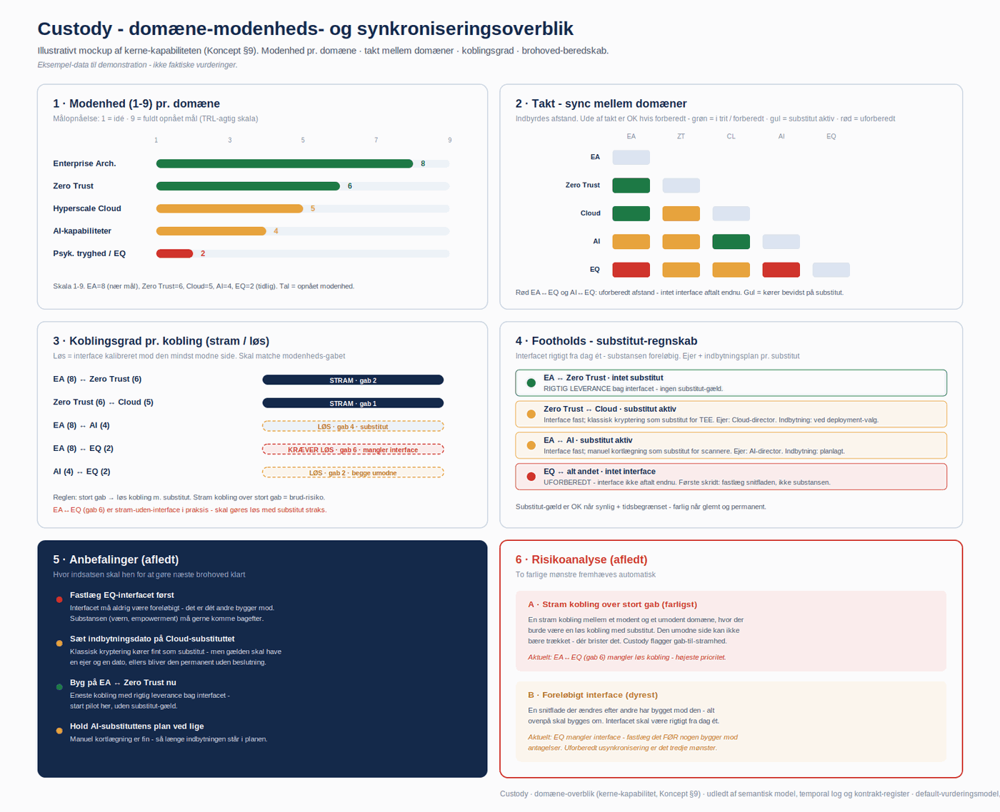
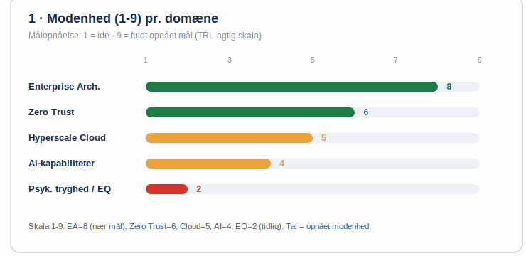
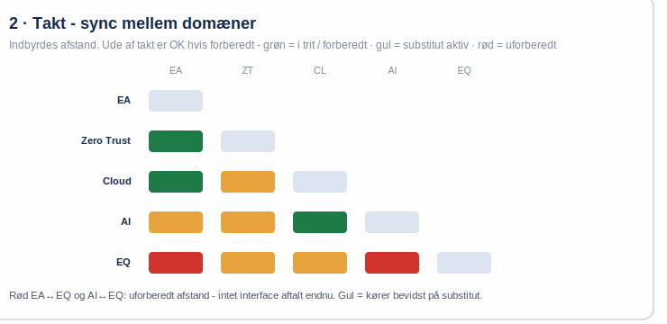
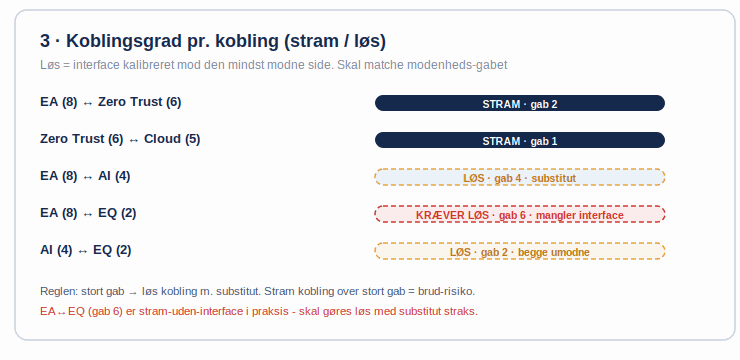
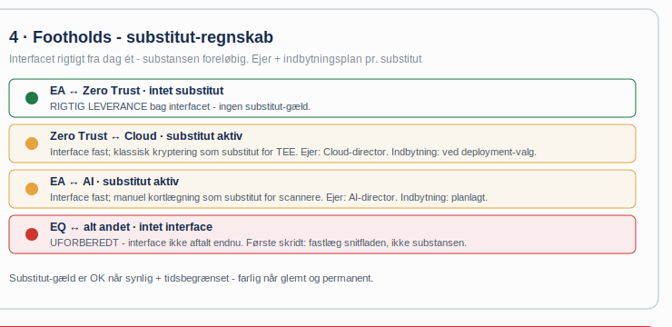
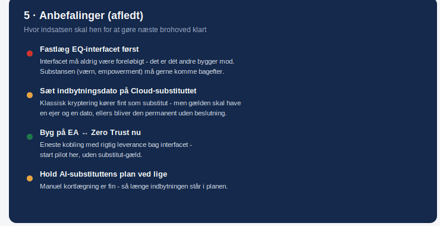
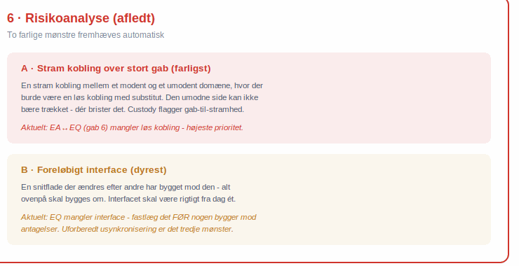

Strategic second opinion
Independent pushback on direction and vendor choice, before the decision locks.
When every workstream reports green and the program slips anyway. We figure out where it falls between the streams, and after three weeks you have a map with names on it for who owns what.
When a decision has sat still for months because architecture, security and legal each said yes to their own piece. We figure out what is actually holding it up and get it ready to decide inside a month.
When two vendors each deliver exactly what they signed for and the whole thing still does not work. We figure out what sits between them and who has to own it. Usually three weeks.
The first step is always the same: forty-five minutes, no slides. You describe one cross-cutting question that always stalls, and we look at it together. Nothing to prepare, and you are not committed to anything afterward.
The AI era makes knowledge cheap. What gets scarce is the connective tissue: the couplings between programs, domains and vendors. Whoever owns the coupling layer owns the direction. Whoever rents it from a vendor has outsourced their room to maneuver.
You can see it in the market. The argument about platform lock-in, most recently around Palantir, comes down to one question: does the customer own their own context, or rent it? But the pattern is bigger than any single vendor, and it is rarely one decision that settles it. The coupling layer moves out a little at a time:
Each one was sensible, each one was approved, and none of them was the decision to give up the overview. Together they were. Once models get cheap, the vendors that win are the ones that let a customer walk without losing the connective tissue they built. That is where Looplo starts: couplings should be owned, not rented.
Looplo is being built as a curated network for independent advice at the intersection of five domains: enterprise architecture, hyperscale cloud, zero trust and sovereignty, agentic AI, and psychological safety. The domains depend on each other, but rarely all at once. The problem usually sits between two or three of them, and that is where a solution holds or fails: it never gets further than its least mature domain.
Trust is not a single number. Each domain contributes its part, and top marks in all five without integration still leaves you an organization nobody can rely on. Looplo builds the missing connective organ.
More eyes on the work. That holds quality in both directions - depth inside a single domain and the interplay between them. The network is built from people who take the whole and the interdependencies seriously; that is what qualifies them, not depth in one field alone. Today the advisory work is carried by one experienced advisor with a professional network around him, and it is being widened deliberately and by invitation. Independent professional advice that stands behind its signature.
With peer review as the principle. Three forms, depending on need and situation.
Independent pushback on direction and vendor choice, before the decision locks.
Direction across model and implementation shops, so the customer owns the whole and no vendor sets the course.
From architectural foundation to responsible rollout - adoption breaks if the foundation gets skipped.
The disciplines stay the same. What changes is what is pressing on you, and therefore what the initiative ends up being called.
The same eight come up again, whatever the initiative is called. It is not a catalog to pick from: the diagnostic points at what the situation calls for, and often that is one of them, not five.
The same work in five guises. Which one it becomes depends on what is pressing on you, not on a catalog.
The couplings were made piece by piece by whoever stood closest. Each one held up on its own. Together they have become a debt to be paid down, not redesigned.
Without a shared vocabulary layer, no model can be checked and no coupling described. The layer is built under your control and exports in open formats.
The compliance market sells checklists. The hard part is not putting a mark on something. It is that the mark still holds once the content has gone from model to system to archive to public records request.
The seller measures their own product. The buyer measures their own use of it. Both numbers are right, they are not the same, and neither can settle the matter. So two organizations argue over spreadsheets instead of doing business.
Rightsizing cuts capacity. Carbon accounting measures consumption. It is the same number seen from two sides - counted by two functions that do not talk to each other. So the saving never becomes a carbon number, and the carbon number never becomes a saving.
Every domain pair has a standard way in: one named coupling point where we start. The rest of the picture comes along as context, at whatever pace it can carry.
One shared business vocabulary - not fourteen versions of the same term.
Sales has a definition. Finance has another. Customer service has a third, and it is the most useful one of the bunch. None of them is wrong. Each was tuned to its own purpose and holds up all the way down.
Then the model arrives. It trains on all fourteen and settles on a fifteenth. It answers fast and with confidence, and nobody can say whether it is right, because there is nothing to check the answer against.
This is not a data quality problem. It is a language nobody owns.
We start with a short review of the vocabulary layer and data lineage. If there is something to work with, we move to a focused diagnostic.
What is allowed to live where - scaling made steerable.
All five work. All five are documented. No two are alike. This is not sloppiness. Each team solved a real problem when it landed in front of them, and none of them had a mandate to decide for the others.
The bill shows up later. Not as an outage, but as a slow climb in how long it takes to do something perfectly ordinary.
Cloud does not get out of hand from bad decisions. It gets out of hand from good decisions made in five places without a shared frame.
We start with a workshop on landing zones and platform governance. A diagnostic follows if the picture calls for it.
Sovereignty is an architectural choice, not just policy.
There is a memo. It is thorough, it is correct, and it says where data is allowed to sit. The memo just never makes it into a drawing. It becomes a clause in a contract and a checkbox on a form.
Two years on you need to move something, and you find the choice was made by a vendor's default setting.
Sovereignty is not a position. It is an architectural pattern, or it is nothing.
We start with a review of trust boundaries and data locality, held against your actual drawings.
Clear boundaries make for structural safety.
There is an interface between two systems. It has run for four years. Nobody knows who owns it. Everyone has a hunch about who it probably is, but nobody says it out loud, because the question sounds like an accusation - and because whoever asks risks being handed it.
So it lives on as an unwritten arrangement between two people who are both about to change jobs.
Feeling unsafe is not a personal shortcoming. It is what happens when responsibility was never drawn.
We start with a workshop that draws the chain of responsibility from the executive level down to domain and interface.
Protection across hybrid boundaries.
There is a network. There is a cloud. There is a vendor with access. And there are the four things somebody bought around IT because they were needed last week.
Each perimeter is defended properly. The trouble is not the holes in them. It is that none of them still describes where the organization ends.
When the perimeter can no longer be drawn, identity is the only thing left to build on.
We start with a review of identity and perimeter across the hybrid boundaries.
Capacity that matches the AI workload.
There is a model that solves the problem. It is validated, somebody demoed it, and everyone agreed it was impressive. Six months later it is sitting in the same place.
Not because it is a bad model. The road from notebook to production runs through capacity, access, monitoring and an operational owner that nobody thought about while the model was being built.
AI rarely fails on the model. It fails on everything that has to be in place before the model can get off the ground.
We start with a workshop on compute and MLOps maturity: what the platform can actually carry.
Headroom to think instead of putting out fires.
Not because it is against the rules. Because everyone knows what happens if it goes sideways, and because there is no decent way back. So it ships on a Tuesday, in smaller pieces, with more manual steps than anyone will admit to.
It looks like caution. It is an organization that has arranged itself around the fact that changing your mind is expensive.
You cannot work cloud-native in a culture where backing out costs you something.
We start with a workshop on toil and automation - where the hours go, and what a rollback actually costs today.
AI without new holes - and with an audit trail.
It makes decisions that affect people, and it is better than what it replaced. Then comes the question: why that answer, on that day, about that person.
There are logs. They show the model answered. They do not show what it drew on, which version was running, or who approved its access to that data.
Governance is not something you lay on top of a model. It has to be there before the model is allowed to see anything.
We start with a review of model governance and audit trail, measured against NIS2 and the EU AI Act.
Nobody reports a mistake if it costs them their head.
Not because the tooling failed. Somebody saw something odd, figured they had probably caused it themselves, and hoped it would go away. It did not.
We spend millions on detection and forget that the first sensor layer is people. A person does not report something that could cost them the job.
Nobody reports a mistake into a system where mistakes carry a price.
We start with a workshop on incident culture: how long it takes to go from a hunch to something written down, and what drives that lag.
Probabilistic output calls for shared responsibility.
It was right in ninety-nine cases out of a hundred. The hundredth landed on a citizen, a patient or a customer, and now somebody has to answer for it.
The developer built to spec. The practitioner followed the recommendation. Management approved the use. Everyone acted responsibly, and still nobody owns the outcome.
A probabilistic system needs an accountability model agreed in advance. Otherwise the organization finds a scapegoat instead.
We start with a workshop that settles an accountability model: who has the standing to say no, and do they know it.
The form scales with the need: from the forty-five minutes without slides, through a short review or a workshop on the coupling point and a focused diagnostic, to longer strategy and build engagements. We always start small and let the substance decide the next step.
An engagement is a mission: one goal, stated by you, and a defined point where it is finished.
Looplo comes in alongside your setup, never on top of it. We do not count heads; we own the connective work. Looplo replaces nobody.
Owns the connective work between your vendors and teams. Translates across domains, so one field's fix does not become the next one's problem.
If a field is short-handed or missing a skill, Looplo supplies someone - temporary, targeted, and with no lock-in.
What no single vendor sees. The peer network brings specialist depth into the domains where new blind spots show up.
Looplo is a curated network, not a bench - peers who review each other's work:
Confidentiality by design. Material is held every time to the smallest possible closed group and one standing point of contact.
Where the work requires it, security clearance within the group can be a condition.
Most expensive to fix when a mistake reaches the user late. It gets caught where the domains meet - by someone who did not build it.
Looplo has no platform your connective tissue has to live in. There are tools, but they run in your environment, and everything exports in open formats from day one.
Specialist skill gets pulled in when a blind spot calls for it - not a standing bench you have to carry.
Vendors and teams keep working in their own field. Looplo holds the shared picture.
The advisory work is the substance. The tools come out of places where the work shows a need the customer ought to own outright. Custody is the anchor; Verify and Peer build on it. Together they carry the same idea: the value lives in the couplings, and couplings should be owned, not rented.
A governance node inside your own environment. You hold the key, keep the immutable log, and own the coupling layer. Built to be accreditable.
Neutral B2B verification and attestation. An independent aggregation layer that makes data demonstrable outward, without any one party owning the truth alone.
A peer network and a federation where collective authority forms without power gathering in one place. Independent nodes strengthen each other.
Mature concepts under development - not finished boxes. We promise what we can show.
From context to containers to attestation - and why the ownership model separates Looplo from platform lock-in. Switch between the views.
See how it gets calculated in practice - three examples →Three examples from the coupling matrix - a five-link chain of variables, simulated 10,000 times, with a real number at the other end. This is the format, not just the claim.
The three examples below show the method with general default values. In real work they get replaced in two steps:
Best estimate. Half of the 10,000 scenarios land below, half above.
Only 10% came out worse. The number you can commit to in writing.
Only 10% came out better. The ceiling - it shows the upside.
Wide spread = still more unknowns in the chain.
The three examples above are selected links. Here all 20 couplings in the matrix are simulated together, chained through the same domain maturity logic. 10,000 iterations.
The chains and default values above are professionally reasoned examples meant to illustrate the method. They are not measured data or any customer's verified numbers. In real work they get replaced with your own.
Looplo writes regularly about couplings, foundations and sovereignty. Substance rather than advertising.
The iceberg: the hard part of AI is not the technology. It is alignment, accountability and organizational design below the waterline.
Series · SemanticsThe language model is not the world model. The semantic layer is the coupling between them, and the customer needs to own it.
Series · SovereigntyWhen knowledge gets cheap, the connective tissue gets expensive. Who owns your coupling layer - you or your vendor?
Send a note to jacob@falkentorp.dk with “Newsletter” in the subject line and you are on the list. No selling of addresses, unsubscribe in one line.
Looplo was founded by Jacob Falkentorp: enterprise architect and advisor with roots in government transformation - including the Danish Ministry of Finance - and in media and with other private clients. The role is the owner's representative - vendor neutral, mandate based, on the owner's side of the table.
Professional grounding in security and management accountability: university examination from the Technical University of Denmark in IT security and management accountability (NIST), top grade. Supplemented by completed coursework in Microsoft SC-100 and SC-200, among others, and SAFe DevOps.
The motto is meant seriously: where the friction comes to light. We do not go looking for it to put anyone on the spot. We look for it because that is where the value is hiding.
Founder, Looplo
Book a conversationOne shared truth across organization and domains - under your own control
Looplo Custody is a governance node that runs inside your own environment. It brings together one trustworthy picture of your couplings, domain by domain, and you hold the key. That the vendor cannot read your data is proven, not promised.
Not because anyone cheated you. It happened by degrees. The first integration got documented at the vendor, because that is where the work was happening. So did the next one. Three years on, the map of your own couplings is something you rent.
You rarely notice it day to day. You notice it the day somebody asks what actually talks to what, and getting an answer takes a support ticket.
You do not own your architecture if you have to ask permission to look at it.
It usually comes up in three places:
All three have this in common: they arrive with a deadline.

Tap to enlarge - pinch to zoomOn-premises or your own cloud tenant. Air-gapped is not a showstopper - the node does not need to phone home.
Your KMS releases the key only once the code has proven its integrity. Tampered code never reaches the key.
The enclave issues a signed attestation of which code is running, unaltered. "The vendor cannot see in" becomes provable.
In work where classified material never leaves the agency, approval moves from a gate to a timeline.
From 2 August 2026 the EU AI Act tightens the transparency requirements for AI systems and AI-generated content. Custody's attestation and immutable log turn provenance into proof rather than assertion - exactly the documentability a transparency requirement rests on. Together with the Data Act (portability, open formats, no lock-in) and DORA (third-party and concentration risk), the regulation points the same way: ownership the customer holds themselves.
The overview is one glance. The understanding comes from going through it panel by panel. The six panels hang together: the top four measure, the bottom two derive.

Tap to enlarge - pinch to zoomHow mature each of the five domains is, on a scale. This is where you see the foundation holding and where it is thin.

Tap to enlarge - pinch to zoomWhether the domains move in step or drift apart. A red panel means two domains are out of sync and the coupling is starting to break.

Tap to enlarge - pinch to zoomHow tightly each domain pair is coupled. Too loose and knowledge falls between the cracks; too tight and a change in one place knocks over the other.

Tap to enlarge - pinch to zoomWhere you have real footing yourselves, and where you are substitutable and therefore dependent on a vendor. Coupling ownership, stated plainly.

Tap to enlarge - pinch to zoomWhat the data says to do now, derived from the four panels above, in order rather than as a loose list.

Tap to enlarge - pinch to zoomWhere coupling debt turns into concrete risk. This is where a board minute can point at an ownership gap before it becomes an incident.
Looplo cannot read your data, not even technically.
Open formats, whenever you want, without giving notice.
Rule packs, attestation, benchmarks - never captivity.
Custody is a technology provider, never a regulatory custodian. You hold the key and the asset; Custody holds nothing.
Neutral B2B verification and attestation. An independent aggregation layer that makes data demonstrable outward - to partners, regulators and the market - without any one party owning the truth alone. Fee per attestation, never a share of the sale; the neutrality is the whole value. Verify demonstrates outward; Custody inward.
This is not distrust. It is the structure. The seller measures their own product. The buyer measures their own use of it. Both numbers are right, they are not the same, and neither can settle the matter.
So two organizations spend six months arguing over whose spreadsheet governs, instead of doing business.
When both parties have a stake in the number, neither of them can carry it.
It usually comes up in three places:
That last one is the most expensive to be late for.
Five screens from the work with Verify. They follow the need rather than the product: why it becomes relevant now, what must be provable about an action a model has performed, where the chain is picked up again, who gets to set the measurement point in time, and what it looks like when the agents are in operation. The numbers are invented and illustrate the form, not a deliverable.
Verification is built for human scale. A quarterly report, an auditor, a sample. When the claims are produced by models, they arrive in the thousands and must be answered at once, and checking capacity does not keep up. The gap between what is claimed and what is verified does not turn into distrust. It turns into people no longer asking.
The screen shows: the volume of claims that must hold up · how much a human has time to check · the gap between them · the three things that have changed.
Åbn skærmen i fuld størrelseFive links must be held up against something: who gave the mandate, which model and version, which data foundation and on what legal basis, what was actually done, and what was said outwardly. The first four can usually be documented. They just stay inside the house. The fifth is the only one the counterparty sees - and it arrives without its basis.
The screen shows: the five links in the chain · where it breaks · what can be documented internally · what the counterparty can actually see.
Åbn skærmen i fuld størrelseThe proof is gathered in one place, and that place is owned by none of the parties. What goes in is action log, mandate and sources. What comes out is an attested claim with its provenance chain and its caveat. Everything the parties compete on never leaves them. And where the layer runs, and who holds the keys, decides who can shut it down - a choice, not a technicality.
The screen shows: four sources feeding in · the aggregation point · what goes out · what never leaves the individual party.
Åbn skærmen i fuld størrelseWhen a market is about to get a standard, there is a window where the measurement point can still be shaped. If you are in, your own data fits what gets agreed. If you are not, you rebuild measurement and reporting afterwards - every year. And whoever sets the measurement point sets it for those in another jurisdiction too.
The screen shows: the path from working group to standard in contracts · the window where the measurement point can be shaped · the cost of being in versus arriving after.
Åbn skærmen i fuld størrelseOnce the agents are in operation, the question shifts from whether it can be done to how many of their claims actually hold up. Each agent has a mandate, a model with a version, and a share of claims that go out with their basis intact. An expired mandate does not stop the agent. It only stops the attestation - and that is exactly why it must be visible.
The screen shows: five agents in operation · their mandate and model version · number of claims a day · what share is attested · the claims that went out without basis.
Åbn skærmen i fuld størrelseUnder development
A peer network and a federation where collective authority forms without power gathering in one place. Independent nodes strengthen each other, and backup and review are built in. That is where the ownership layer each one holds becomes a shared trust layer, with no single judge.
This is an ordinary condition in specialized organizations. There are three people in the building who understand the area well enough to find the flaw. Two of them built the solution, and the third sits in the same department and has to work alongside them on Monday.
The vendor cannot do it. Not because they are dishonest, but because nobody reviews their own proposal with the hardness a counterpart would. And a large consulting house solves it by gathering the power in one place instead.
Independence is not a quality of the individual advisor. It exists in the structure, or it does not exist at all.
It usually comes up in three places:
It comes up when a decision is big enough that somebody ought to be able to turn it down - and there is nobody who both can and will.
Five screens from the work with Peer. The nodes are the specialists in the five domains - enterprise architecture, hyperscale cloud, zero trust, AI capability and psychological safety. The screens show how independence can be read from the structure rather than promised by the individual: who reviewed the proposal, who was allowed to, when it can still be rejected, what happens when one of them is busy, and what must be on record about the individual specialist. The numbers are invented and illustrate the form, not a deliverable.
The value and the risk live in the couplings between the domains, not inside them. That is why the review of a decision comes from the other ends of the coupling it sits in. An architecture choice written in the EA track is tested by zero trust and hyperscale, which answer for integrity and reliability. No one stands in the middle, and EA does not review its own proposal.
The screen shows: the proposal · the five domains and their ten couplings · the two domains that reviewed · the domain that was not allowed to.
Åbn skærmen i fuld størrelseIn a specialised professional environment, the only ones qualified to judge the work are often those who did it. The map makes that visible rather than awkward. It applies to Looplo too: if our own EA track wrote the proposal, it is not impartial, on equal footing with the client’s own architect. Impartiality follows the role in the case, not the name of the house.
The screen shows: six roles from client, vendor and Looplo · their relation to the proposal · the distance in links · who can say no.
Åbn skærmen i fuld størrelseA decision does not get better by waiting. It gets more expensive to undo. Before contract, a no costs a week’s delay. After the third integration, it costs three systems. Review belongs at the end of the curve where a no is still an answer and not a crisis.
The screen shows: the cost of rolling back across four stages · where the review window lies.
Åbn skærmen i fuld størrelseA network that falls apart when one specialist is busy is not a network. Each domain covers two others, so the requirement of two impartial reviews holds even when one of them is occupied. This is where collective authority differs from a single trusted advisor.
The screen shows: the five domains and whom they cover · one domain out of operation · review capacity set against the requirement.
Åbn skærmen i fuld størrelseIndependence must be readable, not promised. The profile brings it together from three places: the professional basis, which couplings the specialist can review across, and impartiality in the specific case. The review history belongs to it, and the number that matters is not the count of reviews. It is the number of times a no was said. A peer who has never rejected anything is not a review.
The screen shows: domain and trust contribution · professional basis · which couplings can be reviewed · impartiality in the case · review history with number of no-s.
Åbn skærmen i fuld størrelseUnder development
Rightsizing saves money and emissions in one move. Yet the two are accounted for in separate functions, by separate methods, and the gain disappears into the gap. Not because anyone is calculating wrongly, but because nobody owns the connection.
Money. Known, audited and already standardised by FinOps. The only one of the three with a mature data foundation.
CO2e from operations and from the embodied share. Calculable on the same consumption, but it sits in a different set of books.
The translation from number to goal. Choose the index before you calculate - different indices give different answers and hold up differently in front of an auditor.
None of the four is at fault. They simply each see something different. We are not building a fifth layer - we own the key between them.
CSRD, ESRS and the taxonomy set out what must be reported. They do not say how IT consumption is accounted for.
Set out how software emissions are measured. The standard is good and does not cover the cost side.
Supply the factors, including embodied emissions. Open data, uneven coverage.
Standardises the cost side thoroughly. The FOCUS format has four datasets and no column for CO2.
The layers from left to right: EU regulation · GSF and ISO 21031 · Boavizta · FinOps and FOCUS. Beneath them: the common key, which none of the four has.
Open the figure at full sizeEight stages in two tracks - infrastructure and platform, and AI and models - crossed with five kinds of footprint. Most organisations measure only the price column, and only for the stages that appear on an invoice.
The columns from left to right: price in currency · greenhouse gas in CO2e · water in m3 · radioactivity in moles, low to moderate activity on a 2-300 year horizon · UN goals as ESG.
Open the figure at full sizeThe trade-off
The question cannot be answered until both numbers sit in the same set of books. Once they do, something shows up that most people do not expect: the two accounts do not peak in the same place.
The steps from left to right: no action · Looplo alone · light modernisation · targeted procurement · region move · full replacement · green PPA · total rebuild.
In the zone between the two peaks, every step buys lower emissions by giving up return. That rate can be calculated for your numbers. That is what a leadership team has to decide on - not a question of ambition in principle.
Past the climate peak both curves fall. More investment buys less green, because the embodied emissions of everything new exceed what operations saves. It is not intuitive, and it is where good intentions burn capital.
Cleanup and right-sizing give the largest effect per unit of spend anywhere on the curve, and require neither capital nor new equipment. It comes first, wherever you otherwise choose to land.
A company has to choose one place on the curve - and be able to justify why. With nobody owning the couplings behind the two accounts, the choice never gets made. It emerges as the sum of individual purchases that each made sense.